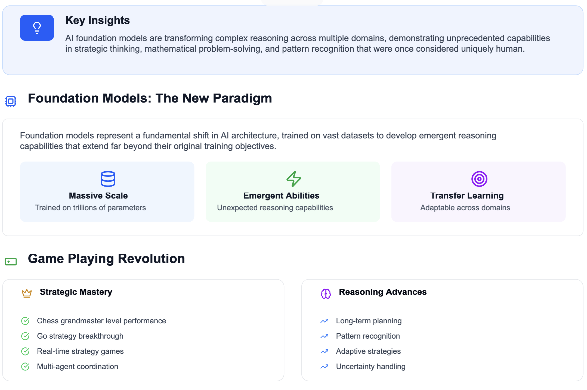
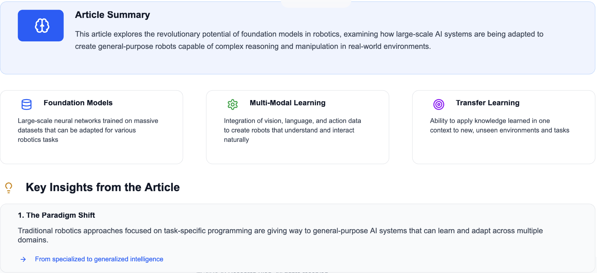

Understanding the Building Blocks of AI: Exploring the 5 Core Properties of Foundation Models Read more…
How AI Foundation Models Are Revolutionizing Complex Reasoning: From Game-Playing to Mathematical Discovery Read more…
The Future of Robotics: Building Intelligent Foundation Models for General-Purpose Robots Introduction: The Vision of Universal Robots¶ Read more…
Foundation Models in Computer Vision: Transforming How Machines See and Understand the World Read more…